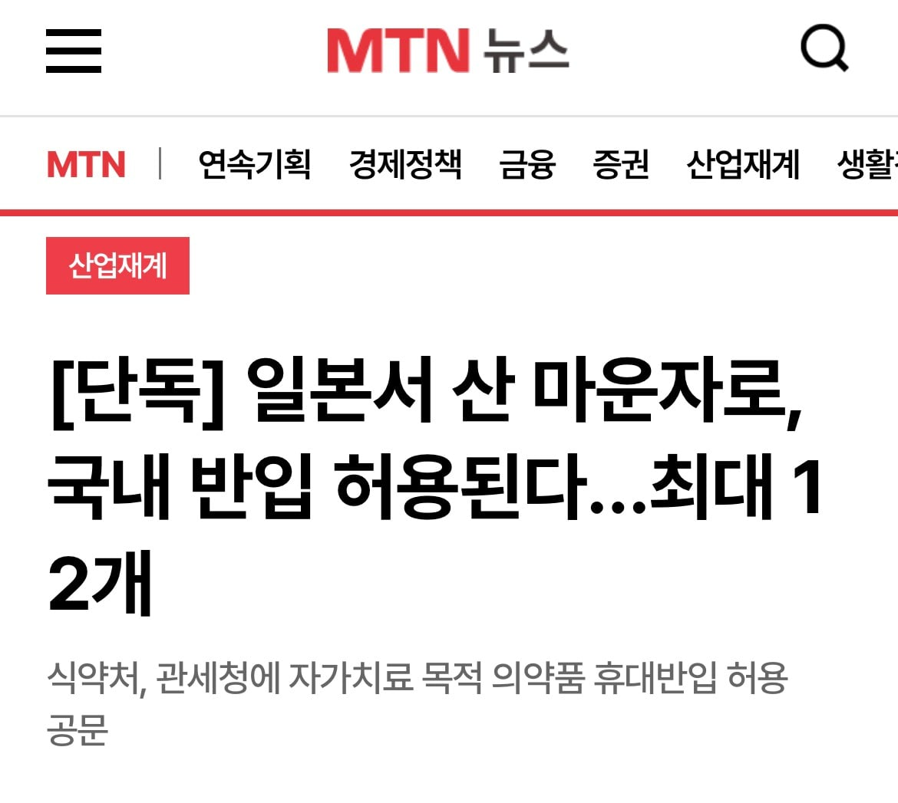

식약처는 공문에서 “자가치료 목적으로 국내 또는 해외 의료 체계에 따라 처방받거나 약국 등에서 구입한 의약품에 해당하는 경우에 한해 휴대반입을 허용해 주길 바란다”는 내용을 전달했다.
특히 마운자로 프리필드펜주의 경우 3개월 투여량에 해당하는 최대 12개까지 반입할 수 있다는 기준을 명시했다.
https://news.mtn.co.kr/article/2026111116412519794

식약처는 공문에서 “자가치료 목적으로 국내 또는 해외 의료 체계에 따라 처방받거나 약국 등에서 구입한 의약품에 해당하는 경우에 한해 휴대반입을 허용해 주길 바란다”는 내용을 전달했다.
특히 마운자로 프리필드펜주의 경우 3개월 투여량에 해당하는 최대 12개까지 반입할 수 있다는 기준을 명시했다.
https://news.mtn.co.kr/article/2026111116412519794
개드립에 반입금지 쉴드 치던 개새끼들 이거 보고 먼 생각이 들지 궁금하네 ㅋㅋㅋㅋ
개돼지들은 그냥 병신이라 스스로 생각못함
ㅋㅋ
예전에 누가 오남용지정되면 반입허용된다고 했었는데 진짜네
이거도 러브돌처럼 생까고 주사기 깨버릴 가능성은 없나? 다수라 그러기 힘들까ㅋㅋ
오 좋네
예약하고 당일치기가면 개이득이네
와 그래도 누가 국감에서 지적하니까 바뀌긴하네
그러게 ㅋㅋ 그나마 젊은사람 대표하는건 그 인간밖에 없는듯..
벤당한다이
가격 차이 보니까 3개월 마다 일본여행 가면서 사도 괜찮겠네?
유지 기준
한국 '성지' 최저가 기준 약 108만 원 (월 36만 원)
일본 약 45만 ~ 54만 원 (5.2만~6.3만 엔)
차액 약 54만 ~ 63만 원
라고하네
7.5이상짜리 한달치가 우리나라에서 60만원이 넘지 않나? 7.5가 일본에서는 얼마야? 고용량일수록 더 이득일거 같은데
7.5기준이면 일본은 70에서 80만 차액만 85 97까지 가네
내가쓴건 5.0 기준이긴함
7.5가 한달에 21500엔(3개월 처방기준)
일본에서 세달하면 한국 한달치랑 똑같은거지
이야 저정도면 차액하고 약간 +@해서 일본 여행으로 돈 쓰면 되겠다
ㅇㅇ 맞음 한
두번은 당일치기하고 년에 두번은 여행도 가능임
그래서 언제부터 되는건데 당장이야?
내일부터
오.. 일본 사는 친구한테 사다 달라고 해야겠네요 ㅎㅎ
그동안 압수당한 사람들에게는 어떻게 보상할거냐?
허가 전 반입이니 ㅈ같아도 어쩔 수 없지 뭐
캬 웬 일이냐 고생했다 개새끼만 있는 건 아니구나. 역시 투표를 잘해야해.
인도도 가능한건가?? 퀵팬
인도에 가서 직접 사오는거면 되지
직접 사와야할걸
근데 무슨이유로 우리나라민 비싼거냐?
여러가지이유로 그렇다고 하네요
중국은 복제약들이 많이 나와서 싸게 파는거고
일본은 마운자로를 급여항목에 넣으면서 비급여도 같이 싸진거임
한국은 딱히 싸게 팔 이유가 없으니까 그냥 비싸게 계속 파는거고
오 이제 FSD도 풀어줘
역시 일 잘하네ㅋㅋㅋ
비행기타고 다녀오는게 더싸네
로비할 돈 떨어졌답니다
쭉보니까 가능만하면 중국쪽이 깡패네
나눠맞기 가능해서 일본보다 낫다함
제발 가격좀 팍팍 떨여져라 진심 너무 비싼거아니냐 주변국에 비해서
걔네둘은 혜택준거라 그럼
위고비는 일본이 더비싸
우리도 건강보험하면 싸질수있음
근데 건강보험 조건이 빡빡해지겠지
줄줄 새네ㅋㅋ
주사 안맞는 친구 한명 대려가면 1년에 2번만 일본가면 되겠네
텔레그램 보따리상들아 힘내줘!!!!
이러다 짭나오는거 아니냐?
진짜 식약청 개병신새끼들ㅋㅋ
대마도 특산물로 마운자로 키우면 부산사람 그냥 심심하면 갔다오겠는데ㅋㅋㅋ